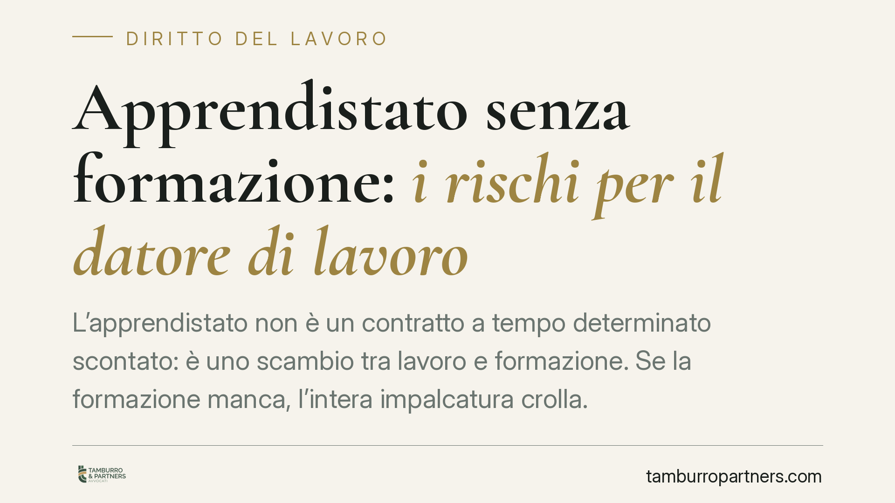

Apprendistato senza formazione: i rischi per il datore di lavoro
L'apprendistato non è un contratto a tempo determinato scontato: è uno scambio tra lavoro e formazione. Se la formazione manca, l'intera impalcatura crolla. Il datore rischia la riqualificazione del rapporto a tempo indeterminato, il pagamento delle differenze retributive e sanzioni contributive. Tre conseguenze distinte, potenzialmente cumulabili, che pesano molto più del presunto risparmio iniziale.

Il caso: quando l'apprendistato è solo sulla carta
L'apprendistato viene spesso scelto per il minor costo contributivo e per l'inquadramento retributivo ridotto rispetto al lavoratore qualificato. È un vantaggio reale, ma ha un prezzo: l'obbligo di erogare formazione effettiva.
Quando l'azienda impiega l'apprendista come un dipendente ordinario, senza piano formativo, senza tutor e senza attività di addestramento documentate, il contratto perde la sua causa tipica. A quel punto non c'è più uno scambio tra prestazione e apprendimento, ma un normale rapporto di lavoro mascherato da formula agevolata.
Inquadramento normativo
La disciplina dell'apprendistato è contenuta negli artt. 41 e seguenti del D.lgs. 81/2015. L'art. 42 individua gli elementi essenziali del contratto, tra cui la forma scritta del piano formativo individuale e la presenza di un tutor o referente aziendale.
L'art. 42, comma 1, impone la redazione in forma scritta del contratto, del patto di prova e del piano formativo individuale. La formazione, in altre parole, non è un accessorio: è l'oggetto stesso del contratto.
L'art. 47 del medesimo decreto disciplina il quadro sanzionatorio. In particolare, prevede che, in caso di inadempimento nell'erogazione della formazione per responsabilità esclusiva del datore di lavoro, tale da impedire la realizzazione delle finalità formative, questi sia tenuto a versare la differenza tra la contribuzione versata e quella dovuta per il livello di inquadramento superiore conseguibile, maggiorata del 100%. Si tratta di una sanzione contributiva autonoma, legittimata dall'INPS.
Sul piano civilistico, la giurisprudenza di legittimità ha affermato in più occasioni che la carenza effettiva e sostanziale della formazione comporta la riqualificazione del rapporto in lavoro subordinato a tempo indeterminato fin dall'origine. L'onere di provare l'avvenuta formazione grava sul datore di lavoro, non sull'apprendista.
Implicazioni pratiche: tre piani distinti e cumulabili
È essenziale capire che le conseguenze non coincidono e rispondono a logiche diverse.
1. Riqualificazione del rapporto. È un rimedio di natura civilistica, azionabile dal lavoratore davanti al giudice. Se accolta, il contratto si considera a tempo indeterminato dall'inizio, con tutte le tutele connesse, inclusa la disciplina sui licenziamenti.
2. Differenze retributive. Conseguenza diretta della riqualificazione: l'apprendista ha diritto alle differenze tra quanto percepito e la retribuzione spettante al lavoratore pienamente qualificato, per il periodo lavorato e nei limiti della prescrizione.
3. Maggiorazione contributiva ex art. 47. È un piano del tutto autonomo, che risponde a un rapporto diverso: quello tra datore e INPS. L'ente previdenziale può richiedere la contribuzione omessa maggiorata, indipendentemente da una causa civile promossa dal lavoratore.
Questi tre profili possono quindi sommarsi: un contenzioso con il lavoratore e, parallelamente, una pretesa contributiva dell'INPS, oltre alle eventuali contestazioni dell'Ispettorato del lavoro in sede di verifica.
Il punto centrale, in tutti i casi, è probatorio. In mancanza di documentazione della formazione effettivamente svolta, il datore si trova a dover dimostrare un fatto di cui non ha lasciato traccia. Registri di presenza ai corsi, attestati, verbali di affiancamento, nomina e attività del tutor diventano decisivi.
Cosa fare in concreto
- Redigere un piano formativo individuale scritto, dettagliato e coerente con la qualifica da conseguire, evitando formule standard svuotate di contenuto.
- Nominare formalmente un tutor e tenere traccia documentale dell'attività di affiancamento e dei moduli formativi erogati.
- Conservare attestati, registri e ogni evidenza della formazione, interna ed esterna, per tutta la durata del rapporto e oltre, in funzione dei termini di prescrizione.
- Verificare la corrispondenza tra mansioni effettive e profilo professionale indicato nel contratto, per evitare che l'apprendista svolga compiti da lavoratore già qualificato.
- Sottoporre il rapporto di apprendistato a un controllo documentale periodico, soprattutto in prossimità di verifiche ispettive o della cessazione del rapporto.
---
Contributo informativo a cura di Tamburro & Partners Avvocati — Avv. Giuseppe Tamburro. Non costituisce parere legale.
Ogni storia di lavoro ha i suoi tempi.
Se gestisci HR e vuoi un confronto su contenzioso, ispezioni o licenziamenti, scrivi allo studio. Ti rispondiamo entro un giorno lavorativo.